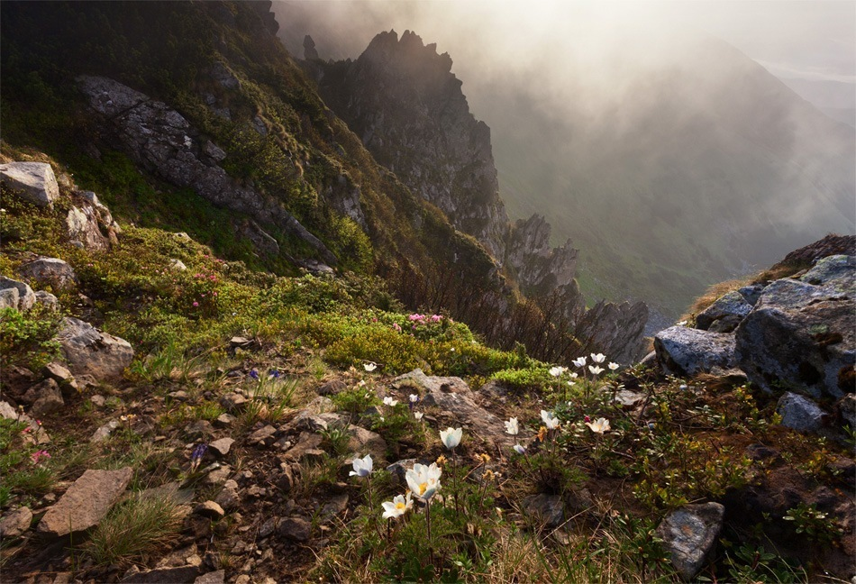

Гора Шпиці (1 863 м), Чорногірський хребет
Назва “Шпиці” добре описує настрій цієї гори. Природні кам’яні насипи подібні до велетенських веж. Розташовані на висоті більше 1800 метрів,
вони вражають глядача масштабом, утворюючи цілі кам’яні коридори. Кожна брила — до 40 метрів заввишки.
Вершина Шпиць входить до масиву Чорногора і розташована на північний схід від головного хребта.
Скелі утворилися після давнього зледеніння.
Дорогою до Шпиць все зелене, вкрите трав’яними і кущовими альпійськими луками. Багато чорниці,
якою можна добряче об’їстися в сезон (ягідний сезон для Карпат починається в липні і триває майже до осені)
З вершини відкривається чудовий краєвид на Чорногірський хребет, ліворуч видно Бребенескул, Дземброню,
Вухатий Камінь, праворуч — Туркул, Говерлу, Петрос. А ще — струмки, що стікають із високих гір донизу, так звані Гаджинські водоспади.
Хоча гора й розташована поруч із популярними маршрутами по Чорногорі, та вершина Шпиць лежить не біля хребтової стежини,
тож туристів на ній не так багато. А от пастухів, які виходять на все літо в гори із вівцями чи конями, тут можна зустріти часто.
На Шпицях у хорошу погоду зазвичай тихо та спокійно. Проте як тільки на Чорногорі з’явиться натяк на вітер та дощові хмари, тут вже буде ледь не гроза: погода на Шпицях зазвичай гірша,
ніж деінде поруч. Кам’яні скелі ніби притягують дощ. Але туман й хмари тільки додають цьому місцю своєрідного шарму та загадковості.

За легендами, тут похований Олекса Довбуш — місцевий герой та ватажок руху опришків. Зізнатись, гуцули завжди «ховають» Довбуша біля великих каменів (справжнього ж місця не знає ніхто). Здогадок про те, де знайшов спокій карпатський
Робін Гуд — багато, але версія про Чорногору — найімовірніша, бо саме на Чорній горі Довбуш заповідав його поховати.
Ще у 1887 році тут був побудований перший прихисток для туристів, виставлені вказівники, зроблене туристичне маркування для сходження на вершину.
Сміливці неодмінно зажадають порцію адреналіну і вилізуть на велетенські скелі, проте треба бути вкрай обережним,
бо кам’яні насипи гострі, наче ножі, і знаходяться на шаленій висоті. Краще знайдіть вдалий ракурс і зробіть влучне фото з безпечного місця.
Все ж хочеться видертись нагору? Приїздіть у складі альп-групи чи разом зі скелелазами — на Шпицях інколи проводять тренування і ті, й інші. Сюди, щоправда,
значно важче нести спорядження, ніж на популярні для лазіння Скелі Довбуша, тому раптово застати групу на скелях — велика вдача.

Маршрут на Шпиці:
Якщо обирати легкий маршрут, можна йти з
Заросляка до о. Несамовитого, а звідти — до Шпиць, прогулянка нескладна на підйом, оскільки тут не буде значних перепадів висот.
Як дістатись:
Зручно їхати до м. Верховина, а після — ще 14 км до с. Бистрець, які не складно подолати на місцевому автобусі.
На жаль, в цій стороні гір нема залізної дороги, тому єдиний варіант — автотранспорт (автобуси чи попутки).
Також на Шпиці можна добиратися із КПП Чорногора або безпосередньо з Чорногірського хребта.